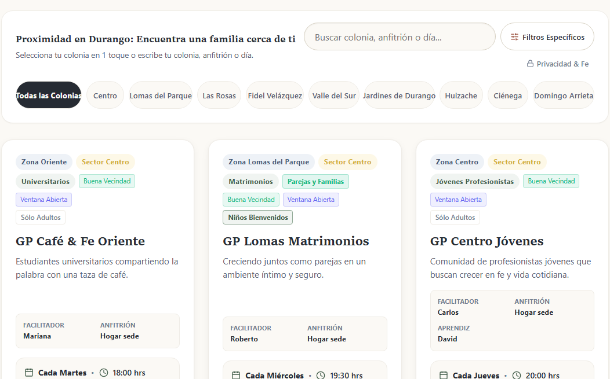

Casas abiertas para la ciudad, coordinación sin saturar WhatsApp
Pórtico es un software ligero concebido para organizar grupos pequeños y comunidades en hogares de la ciudad. Facilita el encuentro vecinal preservando la paz de la mesa familiar, el descanso sagrado de las familias anfitrionas y la custodia soberana de la información comunitaria.
Permite a vecinos y familias encontrar grupos hogareños en su propio sector mediante un catálogo sereno, sin obligar descargas de aplicaciones ni suscripciones.
Protege el descanso de los hogares anfitriones frente al agotamiento crónico, cuidando el ritmo familiar y evitando la saturación de los grupos de mensajería.
La comunidad es la única dueña de sus datos. Cero cobros por miembro, cero dependencia de nubes extractivas y total independencia tecnológica.
Una vitrina comunitaria serena donde cualquier persona o vecino puede explorar grupos de hogar cercanos en su colonia, conociendo facilitadores, horarios y propósitos sin ansiedad de umbral.

Superficie 01: Búsqueda vecinal inmediata por sectores y colonias con fichas claras de acogida hogareña.
Navegación horizontal fluida por sectores y colonias para propiciar relaciones cotidianas a corta distancia del hogar.
Consulta libre y abierta que no exige formularios invasivos ni registros obligatorios para conocer la vida comunitaria.
La información residencial exacta se comparte con prudencia pastoral, resguardando la seguridad del hogar familiar.
Creemos que la tecnología eclesiástica no debe operar como un producto comercial masivo, sino como un instrumento artesanal al servicio de personas, hogares y comunidades reales.
Abrir las puertas de una casa cada semana exige energía, tiempo y serenidad. Pórtico promueve activamente el descanso rotativo y la alternancia de anfitriones para que ninguna familia experimente fatiga en su vocación hospitalaria.
La iglesia custodia su propia base de datos de manera íntegra e independiente. No existen suscripciones mensuales por miembro registrado ni modelos extractivos que condicionen el ministerio de la comunidad.
Reemplaza las cadenas infinitas de mensajes con fichas estables de encuentro, permitiendo que WhatsApp vuelva a ser un espacio de conversación afectuosa y no una pizarra de anuncios saturada.
No ofrecemos un botón de descarga indiscriminada ni un autoservicio transaccional. Implementar un modelo de hogares abiertos requiere discernir el contexto particular de cada congregación, sus pastores y sus líderes.
Para iniciar este diálogo fraterno, visita: